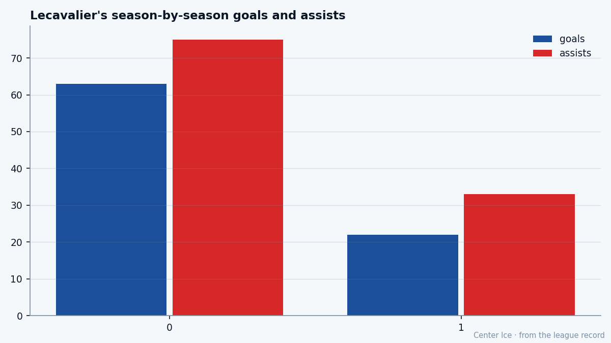

The Michael Jordan of Hockey, Six Years Later: Vincent Lecavalier at 24
Art Williams said it in 1998. He's 24 now, Tampa Bay is second in the Southeast, and the grade reads 84 with the room at 98.
 Tomáš VránaProfile writer · The Sweater
Tomáš VránaProfile writer · The SweaterThe piece
Art Williams stood at a podium in Ottawa in the summer of 1998 and told the room that the 18-year-old centre from Île-Bizard, Quebec, would be the Michael Jordan of hockey. The draft was a formality. Tampa Bay held the first pick and the Lightning's new owner made the comparison that followed Lecavalier for the next six years.
He is 24 now. He has 22 goals and 55 points in 31 games this season. The  Tampa Bay Lightning Lightning are 16-9-2, 42 points, second in the Southeast, four wins in a row and counting. The Book has him at 84 overall, one above his base on the Development Index, with a HERO grade of 92 and morale at 98. The comparison aged into a deadline that expired in 2001. He kept skating.
Tampa Bay Lightning Lightning are 16-9-2, 42 points, second in the Southeast, four wins in a row and counting. The Book has him at 84 overall, one above his base on the Development Index, with a HERO grade of 92 and morale at 98. The comparison aged into a deadline that expired in 2001. He kept skating.
The road that made him
Île-Bizard is a parish on the north shore of Montreal, small enough that the name still sounds like a village to outsiders. Lecavalier played minor hockey there, then drove the 1994 Quebec International Pee-Wee Tournament with a North Shore team, then landed at Rimouski in the QMJHL for two seasons of junior that built the prospect file. The Michel Bergeron Trophy came in his first year at Rimouski, the RDS Cup alongside it. The rest was the 1998 draft and Williams at the microphone.
The first three seasons in Tampa were the years that tested the comparison. He made the team at 18, was named captain at 20, and was stripped of it before the 2001-02 season when management decided he was too young to carry it. On January 14, 2001, a slap shot caught his foot in a 3-0 loss to  Philadelphia Flyers. Fourteen games gone. He finished that season with 23 goals and 51 points in 68 games, which at the time read like a stumble.
Philadelphia Flyers. Fourteen games gone. He finished that season with 23 goals and 51 points in 68 games, which at the time read like a stumble.
The room around him has changed.  Martin St. Louis85, who had 94 points last season, skates on the same wing now.
Martin St. Louis85, who had 94 points last season, skates on the same wing now.  Nikolai Khabibulin90 is in the net at 86 overall. The pieces around him now make a first overall pick look like a franchise.
Nikolai Khabibulin90 is in the net at 86 overall. The pieces around him now make a first overall pick look like a franchise.
What the Book says

His 2003-04 line reads 82 games, 63 goals, 75 assists, 138 points. This season he is at 55 in 31, a pace of 145 points over 82. The overall grade of 84 sits below his 86 potential ceiling. The Index has him up 1, which is the Bureau's way of saying he is running hot but not on a tear. The HERO grade of 92 and SPEE of 91 say the speed and the clutch are there. The FIGH of 51 and SPBI of 52 say he will not win a weightlifting contest, which nobody expected at 76 kilograms.
The gap between his 84 and his 86 potential is two points on the scale. The Bureau thinks he is close to his ceiling. At 24, that ceiling might be the real one, and it might not be.
The room
Tampa Bay has four wins in a row. The streak started December 8 against  Chicago Blackhawks, 4-3 on the road, and it includes a 4-3 win in Montreal on December 12 and a 5-3 win at home against
Chicago Blackhawks, 4-3 on the road, and it includes a 4-3 win in Montreal on December 12 and a 5-3 win at home against  New York Islanders on December 14. The away record is 11-7, the kind of number a team puts up when it wants more than second place.
New York Islanders on December 14. The away record is 11-7, the kind of number a team puts up when it wants more than second place.
The contract runs two more years at $2.60M. That is below market for a centre with 145-point pace. When the deal expires, whoever is running Tampa Bay will face a choice about what a first overall pick is worth in the middle of his prime. Morale is at 98, near the top of the Bureau's Morale Scale, and Lecavalier has not missed a game on the injury list this season.
A locker room at 98 morale is a quiet room. The weight is spread.  Cory Stillman82 is at 78,
Cory Stillman82 is at 78,  Fredrik Modin80 at 76,
Fredrik Modin80 at 76,  Dan Boyle79 at 75 on the blue line, and nobody is asking Lecavalier to carry them. The coach puts him out for the big draws and the last five minutes and stops talking. A man with a HERO of 92 does not need to be told he is the hero.
Dan Boyle79 at 75 on the blue line, and nobody is asking Lecavalier to carry them. The coach puts him out for the big draws and the last five minutes and stops talking. A man with a HERO of 92 does not need to be told he is the hero.
The weight of the comparison
The Jordan line was a compliment that no 18-year-old should have carried. It set a floor dressed as a ceiling: be great immediately, or you are a bust. Lecavalier's first four seasons looked like a kid growing into a body and a league at the same pace. The broken foot took time. The captaincy, given and taken, took something harder to measure.
He is 24 now, six seasons in, and the comparison still surfaces in interviews. The Lightning won four in a row. The Book says 84, the potential 86, the Index up, morale 98.
The kid from Île-Bizard is the second-highest graded player on his own roster behind Khabibulin. The team is winning, and nobody at the podium is making basketball comparisons anymore. Twenty-two goals, thirty-three assists, thirty-one games, and a locker room warm enough to carry into January.